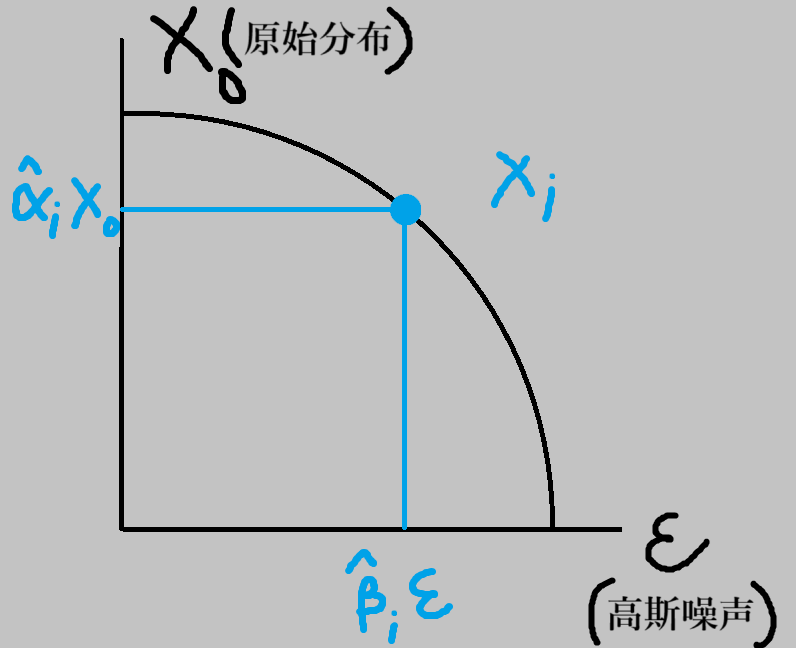

扩散模型理论篇: 从多阶段变分自编码器到概率流常微分方程采样器系列
📖 阅读信息
阅读时间约 45 分钟 | 约 4041 字 | 约 259 个公式 | 没有代码，请放心食用
观前提示：本文 \(\alpha\) 的定义和原论文差了一个平方的阶，以及 \(q\) 和 \(p\) 的定义和原论文相反。
Train: VAE's revenge
让我们回顾一下 VAE 的建模过程：
为了拟合目标分布 \(p(x)\)，我们引入一个隐变量 \(z\)，这样对其的建模就变成了 \(p(x,z)=p(x|z)p(z)\)，而反过来，我们也需要对原变量编码进隐变量中，也就是建模 \(q(x,z)=q(z|x)q(x)\)。然后我们求这两个联合分布的 KL 散度，也就是 \(KL(q(x,z)||p(x,z))\) 来衡量拟合分布和原分布的相似性。然后我们引入强先验的正态性假设，把这个 KL 散度拆出常数得到 \(ELBO\)，再拆成 MSE 和 KLD 两项。
在对 VAE 的讨论中，我们也详细介绍了由于其强制引入的正态性假设，导致压缩率过高，生成的图像很糊。
这就引入了我们介绍 DDPM 的动机——从纯噪声的 \(p(z)\) 一步迈到多样的真实分布 \(p(x)\)，这一步多少迈得有点大了。但是如果我们使用从 \(x_0, x_1, \cdots, x_T\) 的多步解码来代替 VAE 的单步解码呢？
也就是，引入联合分布：\(p(x_0, x_1, \cdots, x_T) = p(x_T | x_{T-1}) p(x_{T-1} | x_{T-2}) \cdots p(x_1 | x_0) p(x_0)\) 为我们的“编码器”，负责将 \(x_0\) 逐步映射到纯噪声分布 \(x_T\sim\mathcal N(0,I)\)，然后反过来是“解码器” \(q(x_0, \cdots, x_T) = q(x_0 | x_1) q(x_1 | x_2) \cdots q(x_{T-1} | x_T) q(x_T)\) 负责将噪声逐步还原到原图像。
下面，让我们开始进行变分推断吧。首先是 KL 散度：
\[
\begin{align*}
KL(p \Vert q) &= \int p \log \frac{p}{q} \mathrm dx_T \cdots \mathrm dx_0\\&= \int p(x_T | x_{T-1}) \cdots p(x_1 | x_0) p(x_0) \log \frac{p(x_T | x_{T-1}) \cdots p(x_1 | x_0) p(x_0)}{q(x_0 | x_1) \cdots q(x_{T-1} | x_T) q(x_T)} \mathrm dx_T \cdots \mathrm dx_0
\end{align*}
\]
现在我们仍然需要对“编码过程” \(p\) 引入归纳偏置。由于我们是将图像转化为纯噪声，所以我们可以把每一步 \(p\) 看作是一个逐步加噪的过程：
\[
x_i=\alpha_i x_{i-1}+\beta_i\varepsilon_i,\quad \varepsilon_i\sim\mathcal{N}(0,I)
\]
这里的 \(\alpha_i\) 和 \(\beta_i\) 是事前给定的参数（其实 \(\dfrac{\alpha_i}{\beta_i}\) 可以理解成信噪比），需要满足 \(\alpha_i^2+\beta_i^2=1\)。为什么要满足这个条件呢？让我们考虑把 \(x_i\) 一直展开到 \(x_0\)：
\[
\begin{align*}
x_i&=\alpha_i x_{i-1}+\beta_i\varepsilon_i\\
&=\alpha_i (\alpha_{i-1} x_{i-2}+\beta_{i-1}\varepsilon_{i-1})+\beta_i\varepsilon_i\\
&=(\alpha_i\alpha_{i-1}\cdots\alpha_1)x_0+\beta_i\varepsilon_i+\alpha_i\beta_{i-1}\varepsilon_{i-1}+\cdots+(\alpha_i\alpha_{i-1}\cdots\alpha_2)\beta_1\varepsilon_1
\end{align*}
\]
由于诸 \(\varepsilon\) 是独立的正态分布，可以叠加：
\[
\beta_i\varepsilon_i+\alpha_i\beta_{i-1}\varepsilon_{i-1}+\cdots+(\alpha_i\alpha_{i-1}\cdots\alpha_2)\beta_1\varepsilon_1=\hat\beta_i\hat\varepsilon_i,\quad\hat\varepsilon_i\sim\mathcal{N}(0,I)
\]
如果我们取 \(\hat\alpha_i^2=(\alpha_i\alpha_{i-1}\cdots\alpha_1)^2\)，且由正态分布方差的叠加得到 \(\hat\beta_i^2=\beta_i^2+\alpha_i^2\beta_{i-1}^2+\cdots+(\alpha_i\alpha_{i-1}\cdots\alpha_2)^2\beta_1^2\)，然后把它们加起来：
\[
\begin{align*}
\hat\alpha_i^2+\hat\beta_i^2&=\beta_i^2+\alpha_i^2\beta_{i-1}^2+\cdots+(\alpha_i\alpha_{i-1}\cdots\alpha_2)^2\beta_1^2+(\alpha_i\alpha_{i-1}\cdots\alpha_1)^2\hat\beta_i^2\\
&=\beta_i^2+\alpha_i^2\beta_{i-1}^2+\cdots+(\alpha_i\alpha_{i-1}\cdots\alpha_2)^2(\beta_1^2+\alpha_1^2)
\end{align*}
\]
这样我们就发现，如果满足 \(\alpha_i^2+\beta_i^2=1\)，那么就有点像高中学过的裂项相消“点鞭炮”，从后面一直算到前面，最终推出 \(\hat\alpha_i^2+\hat\beta_i^2=1\)。
这有什么用呢？刚刚的推导中，我们其实得到了一个非常有用的式子：
\[
x_i=\hat\alpha_i x_0+\hat\beta_i\hat\varepsilon_i,\quad\hat\varepsilon_i\sim\mathcal{N}(0,I),\ \hat\alpha_i^2+\hat\beta_i^2=1
\]
这就意味着，为了获取加噪的中间结果，我们可以一步从 \(x_0\) 获得。
而且这个式子有非常强的几何意义：

这个图对我们理解 DDPM 以及后面的很多模型都有很大的帮助。虽然这个图不是特别严谨，把噪声的方差干掉了。
至于为什么非要拉一个圆（超球面）而不是直线或者其他东西？当然可以！如果拉直线，恭喜你发明了 Flow Matching 里面的 Rectified Flow……并且最后体现过来就是把损失函数里面的 \(\alpha\) 和 \(\beta\) 这些做个替换，相当于（某种意义上）线性化了 Noise Schedule。（或者说改变了每一个部分的 SNR）所以我其实很讨厌这种非要把东西扯上物理学弄出很 fancy 的理论，简简单单才是真。
现在让我们回过头来，看看单步加噪过程 \(x_i=\alpha_i x_{i-1}+\beta_i\varepsilon_i\)，我们其实可以把它看作是 \(\varepsilon_i\) 这个正态分布的重参数化！
也就是，我们可以把加噪过程的递推式写成条件分布的形式：\(p(x_i | x_{i-1}) = \mathcal{N}(x_i; \alpha_t x_{i-1}, \beta_i^2 I)，\alpha_i^2 + \beta_i^2 = 1\)
基于此，我们初步来整理一下 KL 散度的式子：
$$\int p \log \frac{p}{q} \mathrm dx_T \cdots \mathrm dx_0 = \int p \log p \mathrm dx_T \cdots \mathrm dx_0 - \int p \log q \mathrm dx_T \cdots \mathrm dx_0
$$
注意到对 \(p\) 而言，所有参数和分布都是定死的，没有可学习的参数，那么上式的第一部分就是一个常数，可以丢掉。
下面我们着重算第二部分：
\[
\begin{align*}
ELBO &=- \int \left[ p(x_T | x_{T-1}) \cdots p(x_1 | x_0) p(x_0) \right] \left( \sum_{i=1}^T \log q(x_{i-1} | x_i) + \log q(x_T) \right) \mathrm dx_T \cdots \mathrm dx_0\\
&= - \sum_{i=1}^T \int p(x_T | x_{T-1}) \cdots p(x_1 | x_0) p(x_0) \log q(x_{i-1} | x_i) \mathrm dx_T \cdots \mathrm dx_0
\end{align*}
\]
这里把 \(\log q(x_T)\) 丢掉，是因为 \(q(x_T)\) 是加噪后的图像，也没有可学习的参数。
对 \(x_{i+1} \cdots x_T\) 而言，这部分积分：
\[
\int p(x_T | x_{T-1}) \cdots p(x_{i+1} | x_i)\mathrm dx_T \cdots \mathrm dx_0
\]
因为这一块和真正待学习的 \(x_i, x_{i-1}\) 无关，可以先积出来一个常数，然后就可以丢掉了。
而对 \(x_i \cdots x_0\) 而言，我们有
\[
p(x_i | x_{i-1}) \cdots p(x_1 | x_0) p(x_0) = p(x_i | x_{i-1}) p(x_{i-1} | x_0) p(x_0)
\]
也就是刚刚提到的多步并一步的加噪。现在改写得到的 ELBO 如下：
\[
ELBO= - \sum_{i=1}^T \int p(x_i | x_{i-1}) p(x_{i-1} | x_0) p(x_0) \log q(x_{i-1} | x_i) \mathrm dx_T \cdots \mathrm dx_0
\]
下面我们要对 \(q\) 进行建模了，我们还是借鉴从 VAE 里面学到的观点，它虽然作为一个在 \(x_i\) 上“去噪”的过程，但仍然可以将其建模成一个条件正态分布：
\[
q(x_{i-1} | x_i) = \mathcal{N}(x_{i-1}; x_i, \sigma_t^2)
\]
简单展开一下然后取个对数：
\[
-\log q(x_{i-1} | x_i) \propto \frac{1}{2\sigma_t^2} \| x_{i-1} - \mu(x_i) \|^2
\]
下面，我们对均值 \(\mu(x_i)\) 进行讨论。
由于在生成时，\(x_i = \alpha_i x_{i-1} + \beta_i \varepsilon_i\)，也就是 \(x_{i-1} = \frac{1}{\alpha_i}(x_i - \beta_i \varepsilon_i)\)。我们希望去噪之后，尽量贴合原分布 \(x_{i-1}\)，也就是取
\[
\mu(x_i) = \frac{1}{\alpha_i} \left[ x_i - \beta_i \varepsilon_\theta(x_i, i) \right]
\]
这里的 \(\varepsilon_\theta(x_i, i)\) 就是可学习的去噪网络。由此可得：
\[
\begin{align*}
\| x_{i-1} - \mu(x_i) \|^2 &= \| x_{i-1} - \frac{1}{\alpha_i} \left[ \alpha_i x_{i-1} + \beta_i \varepsilon_i - \beta_i \varepsilon_\theta(x_i, i) \right] \|^2\\
&= \frac{\beta_i^2}{\alpha_i^2} \| \varepsilon_\theta(x_i, i) - \varepsilon_i \|^2
\end{align*}
\]
这个损失函数的意思是，我们输入每一步的带噪图片 \(x_i\) 以及时间参数 \(i\)，用来预测噪声。
当然，我们也可以让损失不依赖于 \(x_i\) 而是像之前一样直接从 \(x_0\) 获取，对其展开一下：
\[
\begin{align*}
x_i &= \alpha_i x_{i-1} + \beta_i \varepsilon_i = \alpha_i \left( \hat{\alpha}_{i-1} x_0 + \hat{\beta}_{i-1} \hat{\varepsilon}_{i-1} \right) + \beta_i \varepsilon_i\\
&= \hat{\alpha}_i x_0 + \alpha_i \hat{\beta}_{i-1} \hat{\varepsilon}_{i-1} + \beta_i \varepsilon_i
\end{align*}
\]
这样，我们的损失就只依赖于固定的原分布 \(p(x_0)\) 以及两个随机变量，代回来得到损失函数：
\[
\sum_{i=1}^T \frac{\beta_i^2}{\alpha_i^2 \sigma_i^2} \mathbb{E}_{x_0 \sim p(x_0), \hat{\varepsilon}_{i-1}, \varepsilon_i \sim \mathcal{N}(0, I)} \left[ \| \varepsilon_i - \varepsilon_\theta\left( \hat{\alpha}_i x_0 + \alpha_i \hat{\beta}_{i-1} \hat{\varepsilon}_{i-1} + \beta_i \varepsilon_i, i \right) \|^2 \right]\]
对 \(\alpha_i \hat{\beta}_{i-1} \hat{\varepsilon}_{i-1} + \beta_i \varepsilon_i\) 而言,其为两个正态分布的叠加，就可写作一个正态分布 \(\mathcal{N}\left( 0, \sqrt{\alpha_i^2 \hat{\beta}_{i-1}^2 + \beta_i^2} \right)\)，其中 \(\alpha_i^2 (1 - \hat{\alpha}_{i-1}^2) + \beta_i^2 = 1 - \hat{\alpha}_i^2 = \hat{\beta}_i^2\)，因此，我们可以写成：
\[
\alpha_i \hat{\beta}_{i-1} \hat{\varepsilon}_{i-1} + \beta_i \varepsilon_i=\hat{\beta}_i^2\varepsilon,\quad\varepsilon\sim\mathcal{N}(0,I)
\]
为了消掉 \(\hat{\varepsilon}_{i-1}, \varepsilon_i\) 中的一个，这里需要配一个 \(w\)，主要用2条性质：
\(\begin{cases} \hat{\beta}_i w, \ w \sim \mathcal{N}(0, I) \\ \mathbb{E}[\varepsilon w^\top] = 0 \end{cases}\)
而 \(w\) 也需要能用 \(\hat{\varepsilon}_{i-1}, \varepsilon_i\) 表达。考虑到 \(\hat{\varepsilon}_{i-1}和\varepsilon_i\) 的独立性，交换 \(\varepsilon\) 中的系数，取 \(\hat{\beta}_i w = \beta_i \hat{\varepsilon}_{i-1} - \alpha_i \hat{\beta}_{i-1} \varepsilon_i\) 即可满足以上要求。
再从 \(\varepsilon, w\) 中解出 \(\varepsilon_i = \frac{\beta_i \varepsilon - \alpha_i \hat{\beta}_{i-1} w}{\hat{\beta}_i}\)（利用 \(\beta^2_t+\alpha^2_t\hat\beta^2_{t−1} = \hat\beta_i^2\) ）
这样期望项变成了：
\[
\mathbb{E}_{w \sim \mathcal{N}(0, I), \varepsilon \sim \mathcal{N}(0, I)} \left[\| \frac{\beta_i \varepsilon - \alpha_i \hat{\beta}_{i-1} w}{\hat{\beta}_i} - \varepsilon_\theta\left( \hat{\alpha}_i x_0 + \beta_i \varepsilon, i \right)\|^2 \right]
\]
由于 \(w\) 和 \(\varepsilon\) 独立，先对 \(w\) 求期望得一常数，去掉之后，就得到了原论文 DDPM 的损失：
\[
\mathcal{L}_{\mathrm{DDPM}} = \sum_{i=1}^T \frac{\beta_i^4}{\hat{\beta}_i^2 \alpha_i^2 \sigma_i^2} \mathbb{E}_{\varepsilon \sim \mathcal{N}(0, I), x_0 \sim p(x_0)} \left[ \| \varepsilon - \frac{\hat{\beta}_i}{\beta_i} \varepsilon_\theta\left( \hat{\alpha}_i x_0 + \beta_i \varepsilon, i \right) \|^2 \right]
\]
From the perspective of SDE
Yang Song 的文章 arXiv: 2011.13456 将扩散模型和得分匹配相联系，并且引入了随机微分方程作为它们共同的理论基础。这就大大提升了 DDPM 的理论高度，使之不局限于“加噪——去噪”的原初思路。
引入 SDE 的意义不仅在于找到一个数学工具来研究扩散模型，更在于其可以直接转化为概率流 ODE 进行求解，这就可以将 ODE 的数值解法用来加速扩散模型的收敛。这就催生了诸如 Euler, DPM Solver 等一众采样器。
让我们开始介绍 Song 的论文第一部分的工作：联系 DDPM 和得分匹配。这一节的目的，是关联上得分匹配算法的损失函数
\[
\| s_\theta(x_i, i) - \nabla \log p(x_i) \|^2
\]
其中 \(\nabla \log p(x_i)\) 被称作得分函数。感性理解，我们是在拟合一个梯度场，让这个梯度场去指引我们的生成。
从 DDPM 到得分匹配
为了推出得分匹配形式的损失，我们先引入 Tweddie's Formula。
回顾前向过程 \(p(x_i | x_{i-1}) = \mathcal{N}(x_i; \hat{\alpha}_i x_0, \hat{\beta}_i^2 I)\)
我们需要往回估计反向过程。考虑正态分布 \(p(x|\theta) = \mathcal{N}(\theta, \sigma^2 I)\)
其边缘分布 \(p(x) = \int p(x|\theta) p(\theta) d\theta\)，现在已知 \(x\)，我们要求 \(\theta\) 即：
\[
\mathbb{E}[\theta | x] = \int \theta p(\theta | x) \mathrm d\theta = \int \theta \frac{p(x|\theta) p(\theta)}{p(x)} \mathrm d\theta
\]
由于 \(p(x)\) 已知，可以提到积分号外：
\[
\mathbb{E}[\theta | x]= \frac{1}{p(x)} \int \theta \cdot \frac{1}{\sigma \sqrt{2\pi}} \exp\left[ -\frac{\|x - \theta\|^2}{2\sigma^2} \right] p(\theta) \mathrm d\theta
\]
这里我们凑一个 \(\dfrac{\mathrm d p(x|\theta)}{\mathrm d x} = \dfrac{\theta - x}{\sigma^2} \cdot p(x|\theta)\)，然后接着往下推：
\[
\begin{align*}
\mathbb{E}[\theta | x]&= \frac{\sigma^2}{p(x)} \int \frac{\theta - x}{\sigma^2} p(x|\theta) p(\theta) + \frac{x}{\sigma^2} p(x|\theta) p(\theta) \mathrm d\theta\\
&= \frac{\sigma^2}{p(x)} \int \frac{\mathrm d p(x|\theta)}{\mathrm d x} p(\theta) \mathrm d\theta + \frac{\sigma^2}{p(x)} \int \frac{x}{\sigma^2} p(x|\theta) p(\theta) \mathrm d\theta
\end{align*}
\]
由于 \(\dfrac{\mathrm d}{\mathrm d x}\) 和 \(\theta\) 无关，则
\[
\int \frac{\mathrm d}{\mathrm d x} p(x|\theta) p(\theta) \mathrm d\theta = \frac{\mathrm d}{\mathrm d x} \int p(x|\theta) p(\theta) \mathrm d\theta = \frac{\mathrm d p(x)}{\mathrm d x}
\]
同理，后面一半可以提出 \(x\)，得到
\[
\frac{x}{p(x)} \int p(x|\theta) p(\theta) \mathrm d\theta = x
\]
因此：
\[
\mathbb{E}[\theta | x] = x + \frac{\sigma^2}{p(x)} \frac{\mathrm d}{\mathrm d x} p(x) = x + \sigma^2 \frac{\mathrm d}{\mathrm d x} \log p(x)
\]
若 \(x\) 为向量，则写作 \(x + \sigma^2 \nabla \log p(x)\)，此即为 Tweedie's Formula．
把这个估计代回前向过程，即 \({\alpha}_i x_{i-1} = x_i + {\beta}_i^2 \nabla \log p(x_i)\)
让我们回顾一下：\(x_i = {\alpha}_i x_{i-1} + {\beta}_i \varepsilon_i\)，代上去可得，\(\nabla \log p(x_i) = -\dfrac{\varepsilon_i}{{\beta}_i}\)。 这里已经有点味道了：之前我们已经讨论过 DDPM 的去噪过程是去学习每一步的噪声 \(\varepsilon_i\)，而这个得分函数恰巧也是这个形式，最多差一个系数。
回顾一下之前的推导，从 \(\| x_{i-1} - \mu(x_i) \|^2\)，我们有：
\[
\begin{cases} x_{i-1} = \frac{1}{{\alpha}_i} (x_i - {\beta}_i \varepsilon_i) \\ \mu(x_i) = \frac{1}{{\alpha}_i} (x_i - {\beta}_i \varepsilon_\theta(x_i, i)) \end{cases} \implies \| x_{i-1} - \mu(x_i) \|^2 = \frac{{\beta}_i^2}{{\alpha}_i^2} \| \varepsilon_\theta(x_i, i) - \varepsilon_i \|^2
\]
由 \(-\varepsilon_i = {\beta}_i \nabla \log p(x_i)\)，我们取 \(s_\theta(x_i, i) = -\dfrac{1}{{\beta}_i} \varepsilon_\theta(x_i, i)\)，可得
\[
\| x_{i-1} - \mu(x_i) \|^2=\dfrac{{\beta}_i^4}{{\alpha}_i^2 \sigma_i^2} \| s_\theta(x_i, i) - \nabla \log p(x_i) \|^2
\]
注意，此时它只和 \(x_i\) 有关了。
我们可以写出损失函数了：
\[
\mathcal{L}_{\text{DDPM}} = \sum_{i=1}^T \dfrac{\beta_i^4}{\alpha_i^2 \sigma_i^2} \mathbb{E}_{x_i \sim p(x_i)} \left[ \| s_\theta(x_i, i) - \nabla \log p(x_i) \|^2 \right]
\]
这就是得分匹配形式的损失函数。我们需要训练一个网络 \(s_\theta(x_i, i)\) 接受每一步的图像 \(x_i\) 和时间 \(i\) 去匹配这个得分函数 \(\nabla \log p(x_i)\)。
这里提一嘴，网上很多 DDPM 的得分匹配形式的推导，用的得分函数是这个条件得分函数 \(\nabla_{x_i}\log p(x_i|x_0)=-\dfrac{\hat\varepsilon_i}{\hat\beta_i}\)。不过这样推过来就稍显复杂。只要注意到
\[
p(x_i)=\int p(x_i|x_0)p(x_0)\mathrm dx_0=\mathbb{E}_{x_0\sim p(x_0)}[p(x_i|x_0)]
\]
再带入得分函数，就可以知道两者等价了。此事在科学空间中已有记载。
事实上这个形式才更常用。因为扩散模型的一个关键 trick 就是从初始状态 \(x_0\) 一步推到任意状态 \(x_i\)，因此在以后的讨论中我们沿用这一得分函数。
关联上随机微分方程
前向过程
下面我们开始介绍 Song 的论文第二部分：将加噪和去噪的过程关联上随机微分方程。
为此，我们考虑把一共 \(T\) 步的离散过程，转化为对 \(t\in[0,1]\) 的连续过程的微元近似，因此我们先做换元，引入连续量：
\[
x_i = x(t),\quad\alpha_i = \sqrt{1 - \frac{1}{T} \beta\left(t + \frac{1}{T}\right)} = \sqrt{1 - \Delta t \cdot \beta(t + \Delta t)},\quad\\
x_{i+1} = x\left(t + \frac{1}{T}\right) = x(t + \Delta t),\quad\beta_i = \sqrt{\frac{1}{T}} \beta\left(t + \frac{1}{T}\right) = \sqrt{\Delta t \cdot \beta(t + \Delta t)}
\]
这里 \(T\) 即总步数，\(\dfrac{1}{T}\) 即我们要引入的时间微元 \(\Delta t\)。
我们对 \(\alpha_i\) 作泰勒展开 \(\alpha_i \sim 1 - \dfrac{\beta(t + \Delta t) \cdot \Delta t}{2}\)，然后替换一下，得到：
\[
x(t + \Delta t) = \left[ 1 - \frac{\beta(t + \Delta t) \cdot \Delta t}{2} \right] x(t) + \sqrt{\beta(t + \Delta t)} \cdot \sqrt{\Delta t} \ \varepsilon(t)
\]
减去 \(x(t)\) 得到：
\[
\mathrm dx = -\frac{\beta(t) \cdot x(t)}{2} \mathrm dt + \sqrt{\beta(t)} \cdot \sqrt{\mathrm dt} \cdot \varepsilon(t)
\]
取 \(f[x(t), t] = -\dfrac{\beta(t) \cdot x(t)}{2}，g(t) = \sqrt{\beta(t)}，\mathrm dw = \varepsilon(t) \cdot \sqrt{\mathrm dt}\)（其中 \(\mathrm dw\) 为布朗运动噪声，即“扩散项”），则有：
\[
\mathrm dx = f[x(t), t] \mathrm dt + g(t) \mathrm dw
\]
（为什么布朗运动的噪声和 \(\sqrt{\mathrm dt}\) 有关呢？请参阅本文附录 I）
这就是加噪过程满足的 SDE。在原论文中对应 VP-SDE 那一节，也就是离散近似的 SDE。
变量替换
我们对这个 SDE 做一些变换，导出其更有用的形式。
从 \(\alpha_i \sim 1 - \dfrac{\beta(t + \Delta t) \cdot \Delta t}{2}\) 也就是 \(\alpha_i = 1 - \dfrac{\beta(t_i)}{2}\mathrm dt\)
让我们计算 \(\hat \alpha_i\) 在连续意义上的对应 \(\hat \alpha(t)\)，由于涉及到连乘，我们两边取对数：
\[
\begin{align*}
\log \hat \alpha(t)&=\sum_{k=1}^i\log \alpha_i\\
&=\sum_{k=1}^i\log (1 - \dfrac{\beta(t_i)}{2}\mathrm dt)\\
&\sim \sum_{k=1}^i - \dfrac{\beta(t_i)}{2}\mathrm dt\\
&=-\frac 12\int_0^t\beta(t) \mathrm dt
\end{align*}
\]
这里利用了 \(\log\) 的一阶泰勒展开。对应的，我们有
\[
\hat \beta^2(t)=1-\hat \alpha^2(t)=1-\exp(-\int_0^t\beta(t) \mathrm dt)
\]
以及
\[
f(t)=-\dfrac{\beta(t)}{2}=\dfrac{\mathrm d \log\hat\alpha(t)}{\mathrm dt}
\]
如果我们对 \(\hat \beta^2(t)\) 求导：
\[
\dfrac{\mathrm d \hat \beta^2(t)}{\mathrm dt}=\beta(t)\left(\exp(-\int_0^t\beta(t) \mathrm dt)\right)=\beta(t)(1-\hat \beta^2(t))=\beta(t)-\beta(t)\hat \beta^2(t)
\]
也就是
\[
g^2(t)=\beta(t)=\dfrac{\mathrm d \hat \beta^2(t)}{\mathrm dt}-\dfrac{2\mathrm d \log\hat\alpha(t)}{\mathrm dt}\hat \beta^2(t)
\]
在此意义下我们的 SDE 写成：
\[
\mathrm dx=f(t)x(t)\mathrm dt+g(t)\mathrm dw
\]
引入这部分推导，主要是和之前 DDPM 多步并一步的目的是一样的，我们要消去比较麻烦的 \(\beta(t)\)，转化为可以一步得到的 \(\hat\beta(t)\) 和 \(\hat\alpha(t)\)，同时，也是为后面 DPM Solver 的推导服务。
反向过程
那么如何获得去噪过程的反向 SDE 呢？又如何与刚才得到的得分匹配形式相联系呢？当然是利用贝叶斯公式，为此我们先将上面的 SDE 写成条件分布：
\[
p(x_{t+\Delta t} | x_t) = \mathcal{N}\bigl(x_{t+\Delta t}; \ x_t + f_x(t) \mathrm dt, \ g^2(t) \mathrm dt \cdot I\bigr)
\]
现在，就可以利用贝叶斯公式了
\[
\begin{align*}
p(x_t | x_{t+\Delta t}) &= \dfrac{p(x_{t+\Delta t} | x_t) \cdot p(x_t)}{p(x_{t+\Delta t})}\\
&= \exp\left[ \log p(x_{t+\Delta t} | x_t) + \log p(x_t) - \log p(x_{t+\Delta t}) \right]\\
&\propto \exp\left[ -\dfrac{1}{2 g^2(t) \Delta t} \| x_{t+\Delta t} - x_t - f_x(t) \Delta t \|^2 + \log p(x_t) - \log p(x_{t+\Delta t}) \right]
\end{align*}
\]
为了算下去，我们要对 \(\log p(x_{t+\Delta t})\) 作展开：
\[
\log p(x_{t+\Delta t}) \approx \log p(x_t) + (x_{t+\Delta t} - x_t) \cdot \nabla_x \log p(x_t) + O(\Delta t)
\]
然后作差：
\[
\log p(x_t) - \log p(x_{t+\Delta t}) = -\dfrac{1}{2 g^2(t) \Delta t} \left[ (x_{t+\Delta t} - x_t) \cdot \nabla_x \log p(x_t) \cdot 2 g^2(t) \Delta t \right] + O(\Delta t)
\]
我们的目的其实是写成一个和正态分布类似的 exp 加模平方的形式。为此，这里我们可以配一个
\[
\left[ g^2(t) \Delta t \cdot \nabla_x \log p(x_t) \right]^2 + 2 \left[ g^2(t) \nabla_x \log p(x_t) \Delta t \right] \times f_x(t) \Delta t
\]
因为它们都是 \(\Delta t\) 的二阶项，最后都能消失。不过，配上之后就变成了完全平方式：
\[
p(x_t | x_{t+\Delta t}) = \exp\left[ -\frac{1}{2 g^2(t) \Delta t} \left\| x_{t+\Delta t} - x_t - \left[ f_x(t) - g^2(t) \nabla_x \log p(x_t) \right] \Delta t \right\|^2 \right]
\]
写成正态分布形式：
\[
p(x_t | x_{t+\Delta t})\sim \mathcal{N}\bigl( x_t; \ x_{t+\Delta t} - \left[ f_x(t) - g^2(t) \nabla_x \log p(x_{t+\Delta t}) \right] \Delta t, \ g^2(t+\Delta t) \Delta t \cdot I \bigr)
\]
求极限 \(\Delta t\rightarrow 0\)，再由条件分布转化为 SDE，得到：
\[
\mathrm dx = \left[ f[x(t), t] - g^2(t) \nabla_x \log p(x_t) \right] \mathrm dt + g(t) \mathrm dw
\]
这就是反向过程的 SDE 了。
对于 \(f, g\) 而言，它们完全确定，因此我们需要估计得分函数 \(\nabla_x \log p(x_t)\)；或者换成离散形式的记号：\(\nabla \log p(x_i)\)。
使用一个神经网络 \(s_\theta(x_i, i)\) 来拟合得分函数，就得到目标函数：
\[
\sum_{i=1}^T \lambda_i \mathbb{E}_{x_i \sim p(x_i)} \left[ \| s_\theta(x_i, i) - \nabla \log p(x_i) \|^2 \right] = \mathcal{L}_{\mathrm{DDPM}}
\]
这里 \(\lambda_i\) 是基于 \(p(x_i)\) 引入“噪声尺度不一”的归一化因子。
至此，DDPM、得分匹配和 SDE 的理论已然打通。我们就可以基于丰富发展的 SDE 理论，玩一些花活了。
将 SDE 变成 ODE
这一节介绍 Song 的论文的第三部分：概率流 ODE 的推导。
也就是，将
\[
\mathrm dx = \left[ f[x(t), t] - g^2(t) \nabla_x \log p(x_t) \right] \mathrm dt + g(t) \mathrm dw
\]
转化为概率流 ODE。
我们肯定不能直接把 \(g(t) \mathrm dw\) 项给丢掉，因为方差影响了 SDE 诸多解的“弥散程度”。因此我们需要考虑这一项对总体趋势的影响。或者我们也可以这样看：能不能使用什么手段，手动引入一个可控的方差也就是 \(\sigma(t) \mathrm dw\) 来代替原来扩散项，这样就能间接实现整合。
这个手段就是 Fokker-Planck 方程。
前向过程的 Fokker-Planck 方程
考虑让 \(y\) 和 \(x\) 一一对应，那么
\[
p(x)=\int \delta(x-y)p(y)\mathrm dy=\mathbb E_{y}[\delta(x-y)]
\]
那么对于 \(p(x_{t+\Delta t})\) 而言：
\[
\begin{align*}
p(x_{t+\Delta t})&=\mathbb E_{x_{t+\Delta t}}[\delta(x-x_{t+\Delta t})]\\
&=\mathbb E_{x_{t+\Delta t}}[\delta(x-x_{t}-\Delta x)]\\
&\approx\mathbb E_{x_{t+\Delta t}}[\delta(x-x_{t})-\Delta x\cdot\nabla_x\delta(x-x_{t})+\dfrac 12 \Delta x^2\cdot\nabla_x^2\delta(x-x_{t})]\\
&=\mathbb E_{x_{t+\Delta t}}[\delta(x-x_{t})-(f(t)x_t\mathrm dt)\cdot\nabla_x\delta(x-x_{t})+\dfrac 12 g^2(t)\mathrm dt\cdot\nabla_x^2\delta(x-x_{t})]\\
&=p(x_t)-\nabla_x [f(t)x_t p(x_t)\mathrm dt]+\dfrac 12g^2(t)\mathrm dt\nabla_x^2p(x_t)
\end{align*}
\]
此即为 Fokker-Planck 方程：
\[
\dfrac{\partial p}{\partial t}=-\nabla_x [f(t)x_t p(x_t)]+\dfrac 12g^2(t)\nabla_x^2p(x_t)
\]
时间反演
注意到整个推导是和前向过程的 \(\mathrm dt\) 前面的系数无关的，因此对于反向过程我们也可以带进去得到：
\[
\dfrac{\partial p}{\partial t}=\nabla_x [ \left[ f[x(t), t] - g^2(t) \nabla_x \log p(x_t) \right] p(x_t)]+\dfrac 12g^2(t)\nabla_x^2p(x_t)
\]
但是反向过程是时间反演的，因此我们要对第一项加负号！
由于二阶项前面的系数直接对应 \(\mathrm dw\) 前面的系数，这样就给了我们操作空间，也就是引入一个 \(\dfrac 12\sigma^2(t)\nabla_x^2p(x_t)\)：
\[
\begin{align*}
\dfrac{\partial p}{\partial t}&=\nabla_x [ \left[ f[x(t), t] - g^2(t) \nabla_x \log p(x_t) \right] p(x_t)]+\dfrac 12\nabla_x\left([g^2(t)-\sigma^2(t)]\nabla_x p(x_t)\right)+\dfrac 12\sigma^2(t)\nabla_x^2p(x_t)\\
&=\nabla_x [ \left[ f[x(t), t] - g^2(t) \nabla_x \log p(x_t) \right] p(x_t)+\dfrac{1}{2}[g^2(t)-\sigma^2(t)]\nabla_x p(x_t)]+\dfrac 12\sigma^2(t)\nabla_x^2p(x_t)\\
&=\nabla_x [ \left[ f[x(t), t] - \dfrac 12\left(g^2(t)+\sigma^2(t)\right) \nabla_x \log p(x_t) \right] p(x_t)]+\dfrac 12\sigma^2(t)\nabla_x^2p(x_t)
\end{align*}
\]
那么我们根据这个 Fokker-Planck 方程，就可以写出对应的 SDE 了，但是这一次，方差由我们控制：
\[
\mathrm dx = \left[ f[x(t), t] - \dfrac 12\left(g^2(t)+\sigma^2(t)\right) \nabla_x \log p(x_t) \right] \mathrm dt + \sigma(t) \mathrm dw
\]
那么我们让方差变成 \(0\)，就可以得到对应的概率流 ODE 了：
\[
\mathrm dx = \left[ f(t)x(t) - \dfrac 12g^2(t)\nabla_x \log p(x_t) \right] \mathrm dt
\]
事实上根据之前的结果，我们是在用神经网络 \(s_{\theta}(x_t,t)\) 来拟合得分函数 \(\nabla_x \log p(x_t)\)，也就是说，我们真正需要对付的 ODE 是这个：
\[
\mathrm dx = \left[ f(t)x(t) - \dfrac 12g^2(t)s_{\theta}(x_t,t) \right] \mathrm dt
\]
这一结果为后面的诸多采样器奠定了基础。因为我们可以用各种方法来解出 \(x\)，也就是我们期望生成的图片，而收敛更快的采样器可以花费更少的计算代价得到更精确的解，也就是更高质量的图片。而这一切甚至只需要我们修改推理的代码，完全不需要动基模。
Inference: Samplers
DDPM
回忆一下 DDPM 的训练：
\[
x_{i-1}=\mu(x_i) = \frac{1}{\alpha_i} \left[ x_i - \beta_i \varepsilon_\theta(x_i, i) \right]
\]
使用的损失：
\[
\| \varepsilon - \frac{\hat{\beta}_i}{\beta_i} \varepsilon_\theta\left( \hat{\alpha}_i x_0 + \beta_i \varepsilon, i \right) \|^2=\|\varepsilon-s_\theta\|^2
\]
但实际上我们训练的是预测噪声，因此得到的是 \(s_\theta\)，所以要得到 \(x_{i-1}\) 就需要：
\[
x_{i-1}= \frac{1}{\alpha_i} \left[ x_i - \dfrac{\beta_i^2}{\hat\beta_i} s_\theta(x_i, i) \right]+\sigma_i z,\quad z\sim\mathcal{N}(0,I)
\]
引入的噪声项是基于和反向过程的完全对应。这就得到了 DDPM 的采样公式。从 \(\mathcal N(0,1)\) 中采样一个 \(x_T\)，然后逐步往前推，就能生成图片了。
让我们看看一个在 Anime Face Dataset 训练的 DDPM 采样 100 步的动图吧：
Euler, DDIM, DPM Solver
本节主要介绍 arXiv:2206.00927 的工作，也就是 DPM Solver。
在此之前，让我们收集一下前面的理论成果。
首先，经过漫长的理论推导，我们得到了这个概率流 ODE：
\[
\mathrm dx = \left[ f(t)x(t) - \dfrac 12g^2(t)s_{\theta}(x_t,t) \right] \mathrm dt
\]
其中出现了很多函数，还有一个神经网络。在“变量替换”这一小节，我们得到：
\[
f(t)=-\dfrac{\beta(t)}{2}=\dfrac{\mathrm d \log\hat\alpha(t)}{\mathrm dt}
\]
以及
\[
g^2(t)=\beta(t)=\dfrac{\mathrm d \hat \beta^2(t)}{\mathrm dt}-\dfrac{2\mathrm d \log\hat\alpha(t)}{\mathrm dt}\hat \beta^2(t)
\]
其中的参数函数 \(\hat\alpha\) 和 \(\hat\beta\) 是固定的，可以通过我们的参数调度 \(\alpha_i\) 和 \(\beta_i\) 轻松计算出来。
其中的神经网络 \(s_\theta(x_t,t)\) 是通过得分匹配得到的，也就是利用 \(\mathcal{L}_\mathrm{DDPM}\) 来预测噪声也就是近似得分函数：
\[
s_\theta(x_t,t)\sim\nabla_{x_t}\log p(x_t|x_0)=-\dfrac{\hat\varepsilon_t}{\hat\beta_t}
\]
现在这个网络已经训练好了（如果还没有，快去训练！），也就是概率流 ODE 里面的 \(f\), \(g^2\) 以及 \(s_\theta\) 已经确定了，就剩我们的样本 \(x\) 需要生成了。
简单 Euler 法
最简单最朴实的方法就是将概率流 ODE 看成
\[
\mathrm{d}x = \epsilon_\theta(x_t, t)\mathrm{d} t
\]
然后离散化：
\[
\Delta x = \epsilon_\theta(x_t, t)\Delta t\Rightarrow x_{t-1}=x_t+\epsilon_\theta(x_t, t)\Delta t=[1-\dfrac{\beta(t)}{2T}]x_t-\dfrac{\beta(t)}{2T}s_\theta
\]
最后得到
\[
x_{t-1}=[1-\dfrac{\beta(t)}{2T}]x_t-\dfrac{\beta(t)}{2T\hat\beta_t}\varepsilon_\theta
\]
当然这里的离散化我只挑了最简单的线性近似，当然可以使用 Runge-Kutta 法求解。同时还可以像 DDPM 采样器一样，添入一个噪声项得到祖先采样器（名字后面带 a 的）。
DDIM
概率流 ODE 相对比较特殊，它可以拆成两半，前面不含神经网络参数，后面只含有神经网络参数：
\[
\mathrm dx = \underbrace{f(t)x(t)\mathrm dt}_{\mathrm{Linear\ part}} - \underbrace{\dfrac 12g^2(t)s_{\theta}(x_t,t) \mathrm dt}_\mathrm{Neural\ part}
\]
由于 \(f\) 已知，所以前面的线性项可以精确地积出来！也就是利用常数变易法：
\[
x_t=\exp\left(\int_s^tf(\tau)\mathrm{d}\tau\right)x_s-\int_s^t\left(\exp(\int_\tau^tf(r)\mathrm{d}r)\cdot \dfrac 12g^2(\tau)s_{\theta}(x_\tau,\tau)\right)\mathrm{d}\tau
\]
然后第一项就可以直接积出来了：
\[
f(t)=\dfrac{\mathrm d \log\hat\alpha(t)}{\mathrm dt}\Rightarrow \exp\left(\int_s^tf(\tau)\mathrm{d}\tau\right)=\dfrac{\hat\alpha(t)}{\hat\alpha(s)}
\]
对 \(g^2\) 做一个换元：
\[
g^2(t)=\dfrac{\mathrm d \hat \beta^2(t)}{\mathrm dt}-\dfrac{2\mathrm d \log\hat\alpha(t)}{\mathrm dt}\hat \beta^2(t)=2\hat\beta^2(t)\left(\dfrac{\mathrm d\log\hat\beta(t)}{\mathrm dt}-\dfrac{\mathrm d \log\hat\alpha(t)}{\mathrm dt}\right):=-2\hat\beta^2(t)\dfrac{\mathrm d\lambda(t)}{\mathrm dt}
\]
丢进前面的式子：
\[
\begin{align*}
x_t&=\exp\left(\int_s^tf(\tau)\mathrm{d}\tau\right)x_s-\int_s^t\left(\exp(\int_\tau^tf(r)\mathrm{d}r)\cdot \dfrac 12g^2(\tau)s_{\theta}(x_\tau,\tau)\right)\mathrm{d}\tau\\
&=\dfrac{\hat\alpha(t)}{\hat\alpha(s)}x_s+\int^t_s\left(\dfrac{\hat\alpha(t)}{\hat\alpha(\tau)}\hat\beta^2(\tau)\dfrac{\mathrm d\lambda(\tau)}{\mathrm d\tau}s_{\theta}(x_\tau,\tau)\right)\mathrm{d}\tau\\
&=\dfrac{\hat\alpha(t)}{\hat\alpha(s)}x_s-\hat\alpha(t)\int^t_s\left(\dfrac{\hat\beta(\tau)}{\hat\alpha(\tau)}\dfrac{\mathrm d\lambda(\tau)}{\mathrm d\tau}\varepsilon_{\theta}(x_\tau,\tau)\right)\mathrm{d}\tau\\
&=\dfrac{\hat\alpha(t)}{\hat\alpha(s)}x_s-\hat\alpha(t)\int^{\lambda_t}_{\lambda_s}e^{-\lambda}\varepsilon_{\theta}(x_{\lambda},\lambda)\mathrm{d}\lambda
\end{align*}
\]
最后一步是换元，利用了：
\[
\dfrac{\mathrm d\log\hat\beta(t)}{\mathrm dt}-\dfrac{\mathrm d \log\hat\alpha(t)}{\mathrm dt}=\dfrac{\mathrm d \log\dfrac{\hat\beta(t)}{\hat\alpha(t)}}{\mathrm dt}=-\dfrac{\mathrm d\lambda(t)}{\mathrm dt}
\]
下面的任务是对积分
\[
\int^{\lambda_t}_{\lambda_s}e^{-\lambda}\varepsilon_{\theta}(x_{\lambda},\lambda)\mathrm{d}\lambda
\]
进行近似。我们考虑最简单的近似法，把神经网络的参数看作常量：
\[
\begin{align*}
\int^{\lambda_t}_{\lambda_s}e^{-\lambda}\varepsilon_{\theta}(x_{\lambda},\lambda)\mathrm{d}\lambda&\approx\varepsilon_{\theta}(x_{\lambda_s},\lambda_s)\int^{\lambda_t}_{\lambda_s}e^{-\lambda}\mathrm{d}\lambda\\
&=(e^{-\lambda_s}-e^{-\lambda_t})\varepsilon_{\theta}(x_{\lambda_s},\lambda_s)\\
&=e^{-\lambda_t}(e^{h_i}-1)\varepsilon_{\theta}(x_{\lambda_s},\lambda_s)\\
&=\dfrac{\hat\beta(t)}{\hat\alpha(t)}(e^{h_i}-1)\varepsilon_{\theta}(x_{\lambda_s},\lambda_s),\quad h_i=\lambda_t-\lambda_s
\end{align*}
\]
这样我们就得到了一阶近似，也就是 DDIM 采样器：
\[
x_{t-1}=\dfrac{\hat\alpha(t)}{\hat\alpha(t-1)}x_t-\hat\beta(t)(e^{h_i}-1)\varepsilon_{\theta}(x_{\lambda_{t-1}},\lambda_{t-1}),\quad h_i=\lambda_t-\lambda_{t-1}
\]
DPM Solvers
其实这个积分
\[
\int^{\lambda_t}_{\lambda_s}e^{-\lambda}\varepsilon_{\theta}(x_{\lambda},\lambda)\mathrm{d}\lambda
\]
还有更好的近似方法。刚刚是把 \(\varepsilon_{\theta}(x_{\lambda},\lambda)\) 估计成常数，但我们也可以对其进行泰勒展开：
\[
\varepsilon_{\theta}(x_{\lambda},\lambda)=\sum^{k-1}_{n=0}\varepsilon_{\theta}^{(n)}(x_{\lambda_{i-1}},\lambda_{i-1})\cdot\dfrac{(\lambda-\lambda_{i-1})^n}{n!}
\]
对各阶导数估计到常数，就只剩下了
\[
\int^{\lambda_t}_{\lambda_s}e^{-\lambda}\dfrac{(\lambda-\lambda_{i-1})^n}{n!}\mathrm{d}\lambda
\]
要求出来，而这是一个正整数次数多项式乘以指数的积分，完全可以使用分部积分法解出解析解！
我们取前 \(k\) 阶泰勒展开得到的采样器，就叫做 DPM-Solver-k。具体的积分计算，可以交给 Mathematica 得到闭式解。于是可以得到论文里面的采样器流程了：
DPM-Solver-2:
\[
\begin{align*}
&\mathrm{Require}: \text{ initial value } x_T, \text{ time steps } \{t_i\}_{i=0}^M, \text{ model } \epsilon_\theta \\
&\tilde{x}_{t_0} \leftarrow x_T \\
&\mathrm{for} \ i \leftarrow 1 \ \mathrm{to} \ M \ \mathrm{do} \\
&\quad s_i \leftarrow \lambda \left( \frac{\lambda t_{i-1} + \lambda t_i}{2} \right) \\
&\quad u_i \leftarrow \frac{\alpha_{s_i}}{\alpha_{t_{i-1}}} \tilde{x}_{t_{i-1}} - \sigma_{s_i} \left( e^{\frac{h_i}{2}} - 1 \right) \epsilon_\theta(\tilde{x}_{t_{i-1}}, t_{i-1}) \\
&\quad \tilde{x}_{t_i} \leftarrow \frac{\alpha_{t_i}}{\alpha_{t_{i-1}}} \tilde{x}_{t_{i-1}} - \sigma_{t_i} \left( e^{h_i} - 1 \right) \epsilon_\theta(u_i, s_i) \\
&\mathrm{end \ for} \\
&\mathrm{return} \ \tilde{x}_{t_M}
\end{align*}
\]
以及 DPM-Solver-3:
\[
\begin{align*}
&\mathrm{Require}: \text{ initial value } x_T, \text{ time steps } \{t_i\}_{i=0}^M, \text{ model } \epsilon_\theta \\
&\tilde{x}_{t_0} \leftarrow x_T, \ r_1 \leftarrow \frac{1}{3}, \ r_2 \leftarrow \frac{2}{3} \\
&\mathrm{for} \ i \leftarrow 1 \ \mathrm{to} \ M \ \mathrm{do} \\
&\quad s_{2i-1} \leftarrow t_\lambda \left( \lambda t_{i-1} + r_1 h_i \right), \quad s_{2i} \leftarrow t_\lambda \left( \lambda t_{i-1} + r_2 h_i \right) \\
&\quad u_{2i-1} \leftarrow \frac{\alpha_{s_{2i-1}}}{\alpha_{t_{i-1}}} \tilde{x}_{t_{i-1}} - \sigma_{s_{2i-1}} \left( e^{r_1 h_i} - 1 \right) \epsilon_\theta(\tilde{x}_{t_{i-1}}, t_{i-1}) \\
&\quad D_{2i-1} \leftarrow \epsilon_\theta(u_{2i-1}, s_{2i-1}) - \epsilon_\theta(\tilde{x}_{t_{i-1}}, t_{i-1}) \\
&\quad u_{2i} \leftarrow \frac{\alpha_{s_{2i}}}{\alpha_{t_{i-1}}} \tilde{x}_{t_{i-1}} - \sigma_{s_{2i}} \left( e^{r_2 h_i} - 1 \right) \epsilon_\theta(\tilde{x}_{t_{i-1}}, t_{i-1}) - \frac{\sigma_{s_{2i}} r_2}{r_1} \left( \frac{e^{r_2 h_i} - 1}{r_2 h_i} - 1 \right) D_{2i-1} \\
&\quad D_{2i} \leftarrow \epsilon_\theta(u_{2i}, s_{2i}) - \epsilon_\theta(\tilde{x}_{t_{i-1}}, t_{i-1}) \\
&\quad \tilde{x}_{t_i} \leftarrow \frac{\alpha_{t_i}}{\alpha_{t_{i-1}}} \tilde{x}_{t_{i-1}} - \sigma_{t_i} \left( e^{h_i} - 1 \right) \epsilon_\theta(\tilde{x}_{t_{i-1}}, t_{i-1}) - \frac{\sigma_{t_i}}{r_2} \left( \frac{e^{h_i} - 1}{h_i} - 1 \right) D_{2i} \\
&\mathrm{end \ for} \\
&\mathrm{return} \ \tilde{x}_{t_M}
\end{align*}
\]
Appendices
I. 布朗运动的二次变分
我们要推导一个布朗运动 \(B(t)\) 满足 \(\mathrm dB=\sqrt{\mathrm dt}\)，即 \((\mathrm{d}B)^2=\mathrm{d}t\)。
我们换成积分式，也就是在 \([0,T]\) 内有
\[
\int_0^T (\mathrm{d}B)^2=\int_0^T\mathrm{d}t=T
\]
换成定义式，也就是对该区间的一个划分 \(\Pi\)，最大步长记作 \(|\Pi|\)，然后证明极限：
\[
\lim_{|\Pi|\rightarrow0}\sum_{i}[B(t_{i+1})-B(t_i)]^2=\lim_{|\Pi|\rightarrow0} S_n=T
\]
这就是布朗运动的二次变分。由于布朗运动的独立性，有
\[
B(t_{i+1})-B(t_i)=\Delta B_i\sim N(0,\Delta t_i)
\]
则根据正态分布二阶矩的性质， \(\mathbb{E}[(\Delta B_i)^2]=\Delta t_i\)，叠在一起就可以得到
\[
\mathbb{E}[S_n]=\sum\Delta t_i=\int_0^T\mathrm{d}t=T
\]
而 \(\mathrm{Var}[(\Delta B_i)^2]=\mathbb{E}[(\Delta B_i)^4]-\mathbb{E}[(\Delta B_i)^2]^2=3(\Delta t_i)^2-(\Delta t_i)^2=2(\Delta t_i)^2\)，即
\[
\mathrm{Var}[S_n]=\sum 2(\Delta t_i)^2\le 2|\Pi|T
\]
故 \(|\Pi|\to 0\) 则 \(\mathrm{Var}[S_n]\to 0\)，根据大数定律，
\[
\lim_{|\Pi|\rightarrow0} S_n=\lim_{|\Pi|\rightarrow0} \mathbb{E}[S_n]=T
\]
这样就得到了 \((\mathrm{d}B)^2=\mathrm{d}t\)。
题外话：由于布朗运动是处处连续处处不可导的，这才导致了其二次变分的值不为零。考虑一个连续函数 \(f\)，我们来考虑其二次变分，利用中值定理：
\[
\begin{align*}
\lim_{|\Pi|\rightarrow0}\sum_{i}[f(t_{i+1})-f(t_i)]^2&=\lim_{|\Pi|\rightarrow0}\sum_{i}[\Delta t_i f'(s_i)]^2\\
&\le \lim_{|\Pi|\rightarrow0}|\Pi|\sup_{x\in[0,T]} f(x) \sum_i\Delta t_i\\
&=\lim_{|\Pi|\rightarrow0}|\Pi|\sup_{x\in[0,T]} f(x) T\\
&=\lim_{|\Pi|\rightarrow0}O(|\Pi|)\\
&=0
\end{align*}
\]
这其实揭示了随机过程和连续过程蛮本本质的一个区别点。
📝 如果您需要引用本文
Yan Li. (Oct. 9, 2025). 扩散模型理论篇: 从多阶段变分自编码器到概率流常微分方程采样器系列 [Blog post]. Retrieved from https://dicaeopolis.github.io/DNN/model-expr/DDPM
在 BibTeX 格式中：
| @online{DDPM,
title={扩散模型理论篇: 从多阶段变分自编码器到概率流常微分方程采样器系列},
author={Yan Li},
year={2025},
month={Oct},
url={\url{https://dicaeopolis.github.io/DNN/model-expr/DDPM}},
}
|